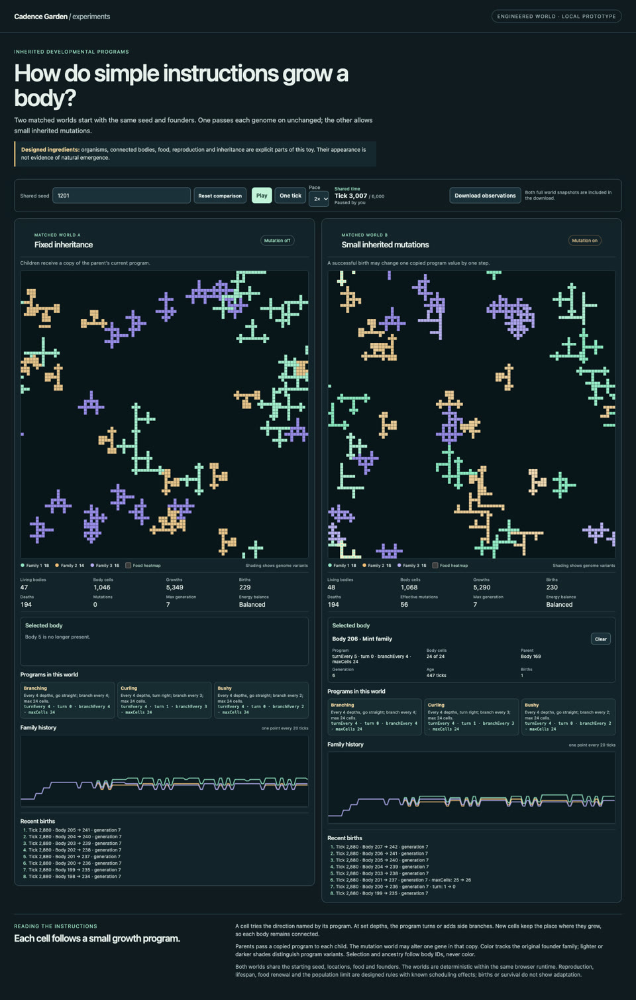
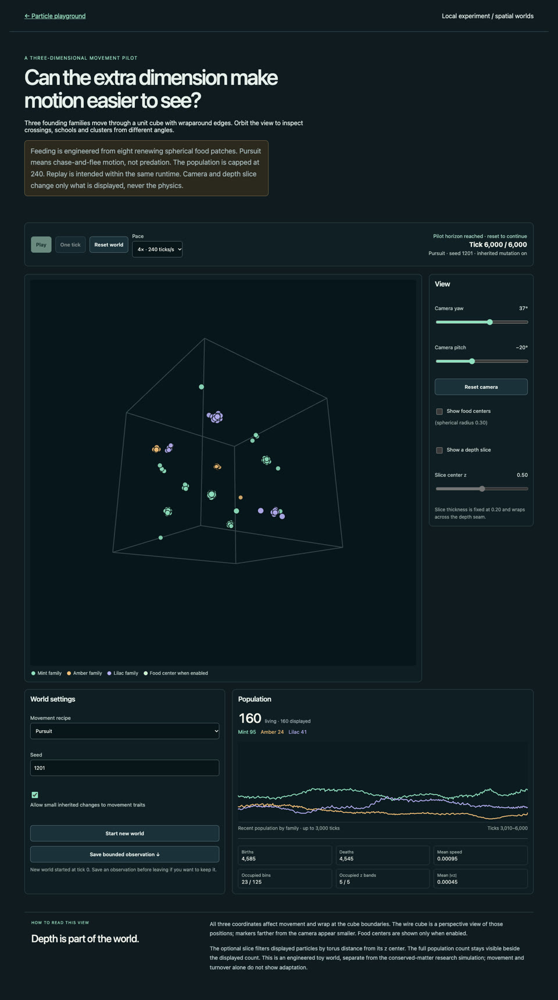

We have several worlds worth watching. My next choice is Hungry shapes: keep the inherited branching bodies, but make food scarce and patchy so where they grow can affect what happens next.
Why this one?
The body shapes are already recognizable. But the recorded worlds repeatedly fill their 48-body ceiling, and most deaths come from the age rule. Food competition is a concrete way to explore a less clock-driven story. This is the next proposed slice; it has not been implemented or run.
These are existing recordings, with different seeds, horizons and playback speeds. Compare the kinds of behavior—not who “wins.” Nothing autoplays. Use each movie’s native play and seek controls; hiding the page pauses playback.
First choice · recognizable bodies
Growing families
Seed 1201; two inheritance settings; browser recording through about 3,007 ticks. Excerpt omits the first 5 seconds of browser startup (begins near tick 230). The captured viewport clips the lower part of the worlds. Capture revision was not recorded and may predate UI review fixes.Full recorded still at tick 3,007

Branching bodies grow and reproduce. Mutated instructions produce a wider collection of programs. That does not establish adaptive shapes.
The friction: 931–977 eligible birth attempts per run hit the ceiling; deaths are overwhelmingly age-based.
Seed 1101 through 20,000 ticks. Five families remain; late activity mostly revisits known trait combinations.Keep the less diverse outcome visible: seed 1103
Hunter and Jade disappear. Protected dominates the three-family ending. This outcome is part of the result.
Keep: the clearest existing family competition. Defer: another trait tweak until it offers a distinct behavior idea.
Seed 1201 through 6,000 ticks; fixed yaw 37°/pitch −20°. Actual depth motion; no camera rotation. Excerpt omits the first 5 seconds of browser startup. Captured viewport clips the lower scene. The recording predates a heading-only UI edit.Full recorded still at tick 6,000

Separated groups and dispersed individuals move in genuine depth. All nine preset/seed pilot worlds remained populated.
Next opportunity: moving food in 3D. That is a plausible extension, not an observed improvement, and morphology is less legible here.
Preserve the original body world. Add scarce-uniform and scarce-patch food modes with the same offered budget. Keep age and population limits unchanged.
Start with seed 1201 through 3,000 ticks. Inspect births, starvation, age deaths, blocked births and changing growth patterns.
If the new worlds empty before a second generation or stay ceiling-bound without a visible difference, revise once with a new version label; stop if that also fails.
If it is worth watching, extend the frozen version to 1202 and 1203. Keep every outcome. Longer runs come only after this screen earns them.
It is editorial selection, not a human study, calibrated life-likeness score or survival contest. Existing evidence was audited and representative frames inspected; the recordings were not independently watched frame by frame. Food, reproduction, inheritance and pressure are engineered ingredients. The failed vision judge and regime diagnostic remain stopped.
Local app links require the existing development server on port 5390. Report links open Markdown source text. This document requires a repository checkout: reused ecosystem movies live outside the docs folder. Original browser captures remain in ignored local worktree folders. This is not a production entrypoint. No new simulations, merge or deployment.